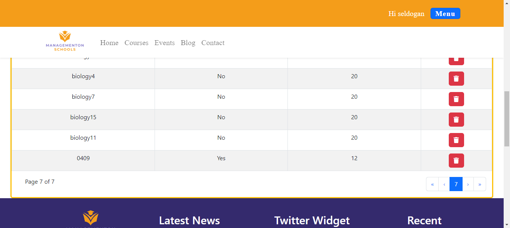
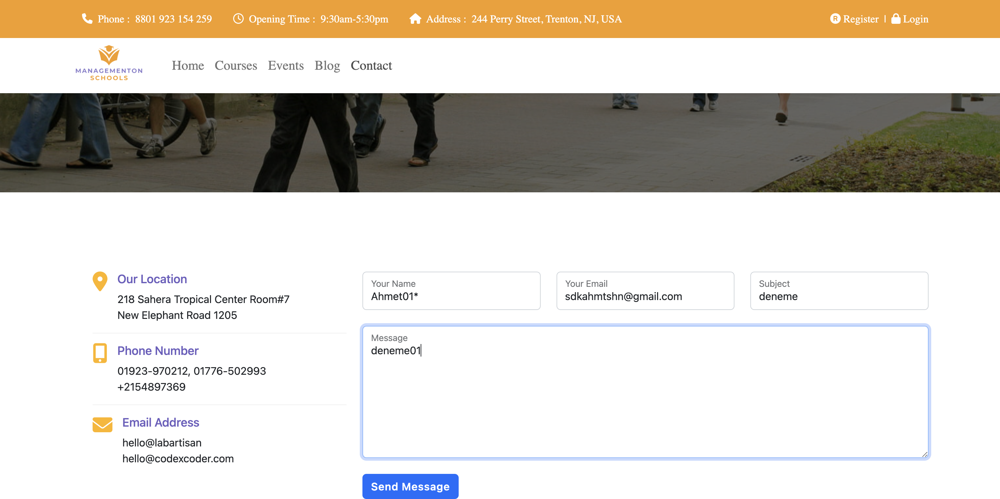
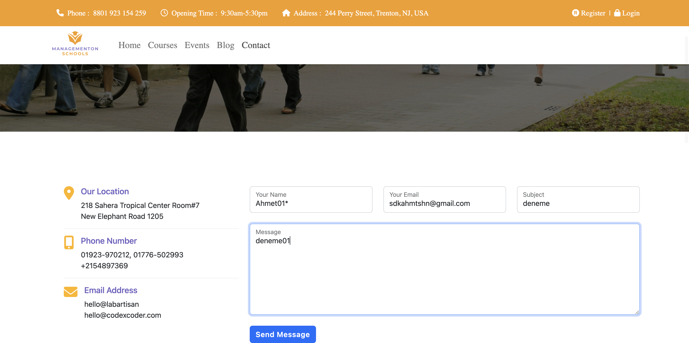
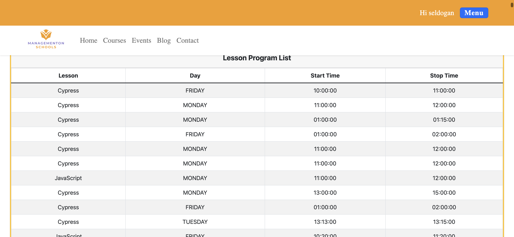

Started
Jul 11, 2023 03:46:31 pm
Ended
Jul 11, 2023 03:49:05 pm
Features Passed
0
Features Failed
1
Features
Scenarios
Steps
Timeline
Tags
| Name | Passed | Failed | Skipped | Others | Passed % |
|---|---|---|---|---|---|
| @US07-TC01 | 0 | 5 | 0 | 0 | 0% |
| @US07-TC02 | 0 | 1 | 0 | 0 | 0% |
| @smokeTest | 0 | 1 | 0 | 0 | 0% |
| @US07-TC05 | 0 | 1 | 0 | 0 | 0% |
| @US07-TC04 | 0 | 1 | 0 | 0 | 0% |
| @US07-TC03 | 0 | 1 | 0 | 0 | 0% |
System/Environment
| Name | Value |
|---|---|
| os | Windows |
-
US07 Deans should be able to see the messages sent by users
15:46:33 / 00:02:31:544 Fail
US07 Deans should be able to see the messages sent by users
07.11.2023 15:46:33 07.11.2023 15:49:05 00:02:31:544 · #test-id=1FailTC_01 Deans should be able to see the messages sent by usersGiven Dean goes to "MosUrl"When Dean clicks the login buttonAnd Dean enters "DeanUserName" on login pageAnd Dean enters "DeanPassword" on the login pageAnd Dean clicks the loginBlue buttonAnd Dean clicks the menu option on the page that opensAnd Dean clicks "Contact Get All"option from main menuStep skippedThen Dean verifies that authors are displayed on the pageStep skippedThen Close the applicationStep skippedhooks.Hooks.tearDown(io.cucumber.java.Scenario)screenshotsFailDean should be able to see the e-mailsWhen Dean clicks the login buttonAnd Dean enters "DeanUserName" on login pageStep skippedAnd Dean enters "DeanPassword" on the login pageStep skippedAnd Dean clicks the loginBlue buttonStep skippedAnd Dean clicks the menu option on the page that opensStep skippedAnd Dean clicks "Contact Get All"option from main menuStep skippedThen Dean verifies emails are displayed on the pageStep skippedThen Close the applicationStep skippedhooks.Hooks.tearDown(io.cucumber.java.Scenario)screenshotsFailDean should be able to see sending datesWhen Dean clicks the login buttonAnd Dean enters "DeanUserName" on login pageStep skippedAnd Dean enters "DeanPassword" on the login pageStep skippedAnd Dean clicks the loginBlue buttonStep skippedAnd Dean clicks the menu option on the page that opensStep skippedAnd Dean clicks "Contact Get All"option from main menuStep skippedThen Dean verifies that the date the messages were sent is displayed on the pageStep skippedThen close the applicationStep skippedhooks.Hooks.tearDown(io.cucumber.java.Scenario)screenshotsFailDean should be able to see subject informationWhen Dean clicks the login buttonAnd Dean enters "DeanUserName" on login pageStep skippedAnd Dean enters "DeanPassword" on the login pageStep skippedAnd Dean clicks the loginBlue buttonStep skippedAnd Dean clicks the menu option on the page that opensStep skippedAnd Dean clicks "Contact Get All"option from main menuStep skippedThen Dean verifies that subject information is displayed on the pageStep skippedThen close the applicationStep skippedhooks.Hooks.tearDown(io.cucumber.java.Scenario)screenshotsFailDean should be able to see message on this pageWhen Dean clicks the login buttonAnd Dean enters "DeanUserName" on login pageStep skippedAnd Dean enters "DeanPassword" on the login pageStep skippedAnd Dean clicks the loginBlue buttonStep skippedAnd Dean clicks the menu option on the page that opensStep skippedAnd Dean clicks "Contact Get All"option from main menuStep skippedThen Dean verifies that messages are displayed on the pageStep skippedThen close the applicationStep skippedhooks.Hooks.tearDown(io.cucumber.java.Scenario)screenshots
-
@US07-TC01
5 tests
@US07-TC01
5 failedStatus Timestamp TestName Fail 15:46:33 pm TC_01 Deans should be able to see the messages sent by users US07 Deans should be able to see the messages sent by users.TC_01 Deans should be able to see the messages sent by usersFail 15:48:07 pm Dean should be able to see the e-mails US07 Deans should be able to see the messages sent by users.Dean should be able to see the e-mailsFail 15:48:25 pm Dean should be able to see sending dates US07 Deans should be able to see the messages sent by users.Dean should be able to see sending datesFail 15:48:37 pm Dean should be able to see subject information US07 Deans should be able to see the messages sent by users.Dean should be able to see subject informationFail 15:48:49 pm Dean should be able to see message on this page US07 Deans should be able to see the messages sent by users.Dean should be able to see message on this page -
@US07-TC02
1 tests
@US07-TC02
1 failedStatus Timestamp TestName Fail 15:48:07 pm Dean should be able to see the e-mails US07 Deans should be able to see the messages sent by users.Dean should be able to see the e-mails -
@smokeTest
1 tests
@smokeTest
1 failedStatus Timestamp TestName Fail 15:48:49 pm Dean should be able to see message on this page US07 Deans should be able to see the messages sent by users.Dean should be able to see message on this page -
@US07-TC05
1 tests
@US07-TC05
1 failedStatus Timestamp TestName Fail 15:48:49 pm Dean should be able to see message on this page US07 Deans should be able to see the messages sent by users.Dean should be able to see message on this page -
@US07-TC04
1 tests
@US07-TC04
1 failedStatus Timestamp TestName Fail 15:48:37 pm Dean should be able to see subject information US07 Deans should be able to see the messages sent by users.Dean should be able to see subject information -
@US07-TC03
1 tests
@US07-TC03
1 failedStatus Timestamp TestName Fail 15:48:25 pm Dean should be able to see sending dates US07 Deans should be able to see the messages sent by users.Dean should be able to see sending dates
-
org.openqa.selenium.NoSuchElementException
5 tests
org.openqa.selenium.NoSuchElementException
5 failedStatus Timestamp TestName Fail 15:47:54 pm And Dean clicks the menu option on the page that opens US07 Deans should be able to see the messages sent by users.TC_01 Deans should be able to see the messages sent by users.And Dean clicks the menu option on the page that opensFail 15:48:07 pm When Dean clicks the login button US07 Deans should be able to see the messages sent by users.Dean should be able to see the e-mails.When Dean clicks the login buttonFail 15:48:25 pm When Dean clicks the login button US07 Deans should be able to see the messages sent by users.Dean should be able to see sending dates.When Dean clicks the login buttonFail 15:48:37 pm When Dean clicks the login button US07 Deans should be able to see the messages sent by users.Dean should be able to see subject information.When Dean clicks the login buttonFail 15:48:49 pm When Dean clicks the login button US07 Deans should be able to see the messages sent by users.Dean should be able to see message on this page.When Dean clicks the login button